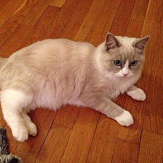
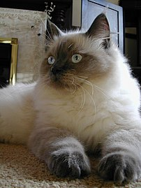
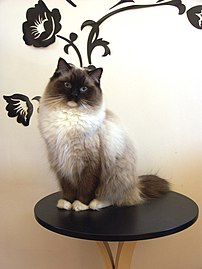
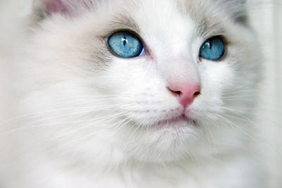
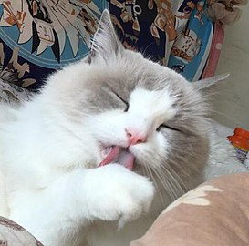
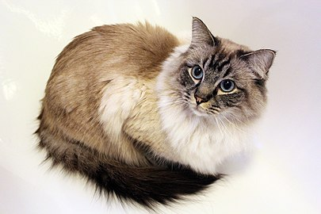
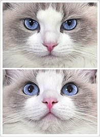
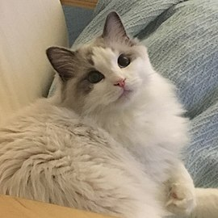
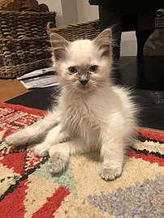

gallery
-  A female blue bicolor ragdoll
-  A blue-pointed ragdoll with darkened extremities.
-  The mitted pattern is like the pointed, but has white paws, chin and abdomen.
-  Blue-eyed kitten. The white patch in the shape of an inverted 'V' on the face indicates a "bicolor" pattern.
-  Blue bicolor ragdoll cleaning her paw.
-  A seal lynx pointed Ragdoll, about three years old.
-  A female blue bicolor ragdoll
-  An 8-month-old blue bicolor ragdoll
-
 A seal-mitted ragdoll
A seal-mitted ragdoll
-  A 10-week-old blue-pointed male ragdoll